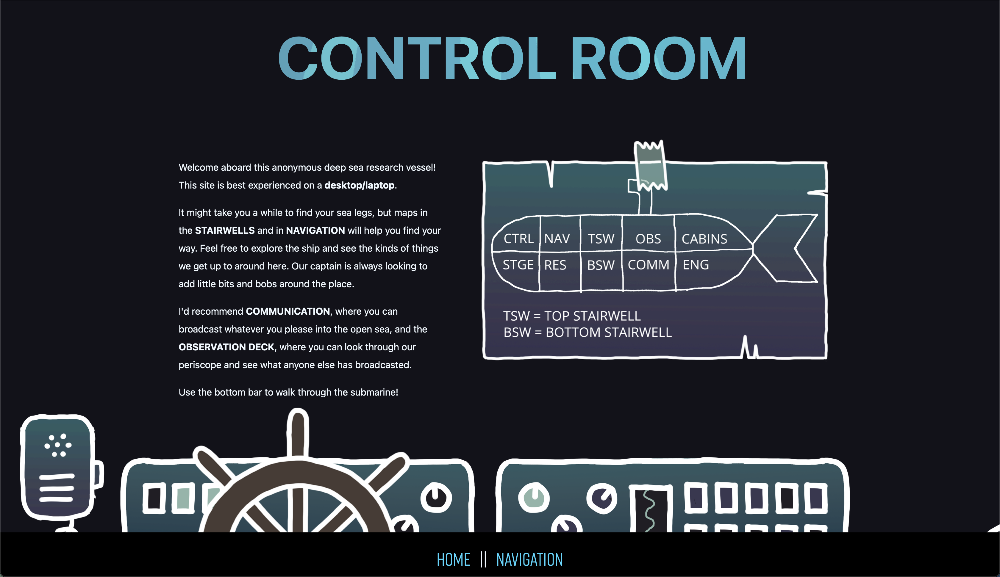
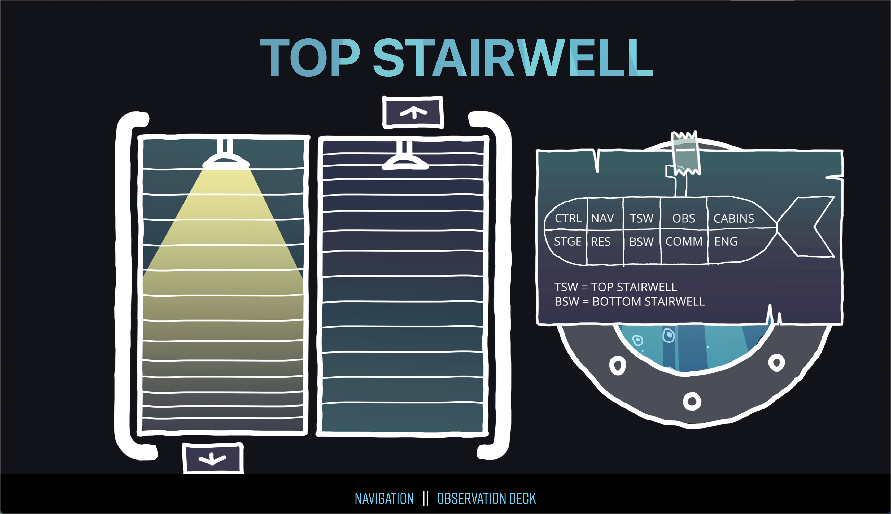
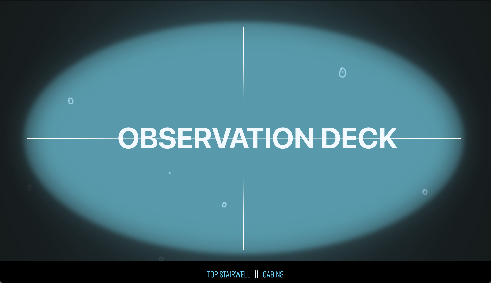
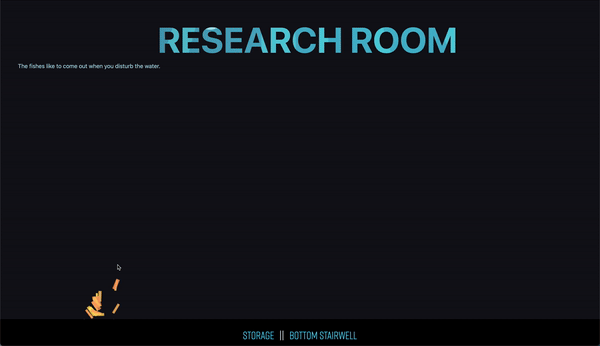
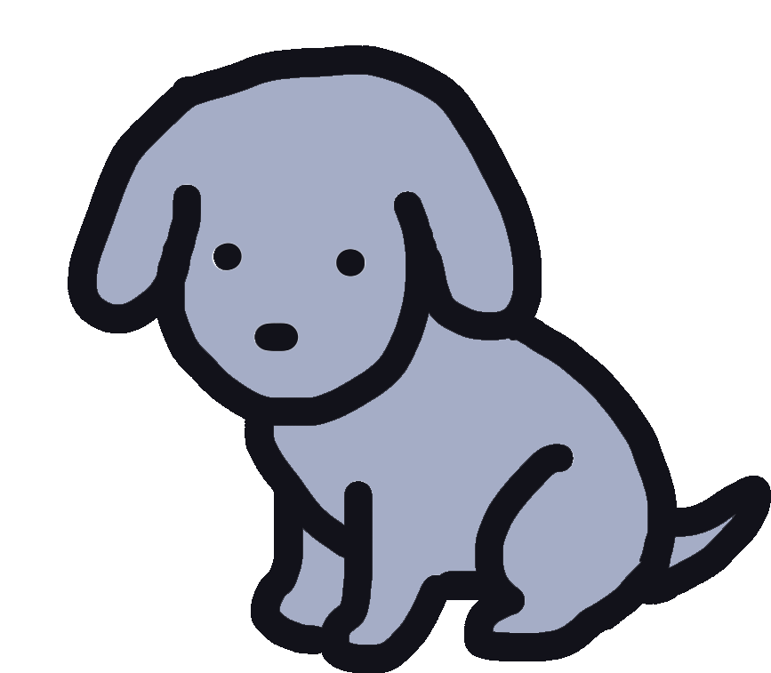

Click here to access the entire website. It is best experienced on a desktop/laptop.
This project was made to be a virtual space we could populate with windows, doors, and objects. It is made of HTML, CSS, and JavaScript, with hand drawn assets.
I took this project as an oppurtinity to learn more about HTML and CSS within site building, and wanted to create an experience that was both exploratoy and comforting.
   The development of this site felt very organic with much of the layout improvised.
Progress work, showcasing the style evolving throughout development.
